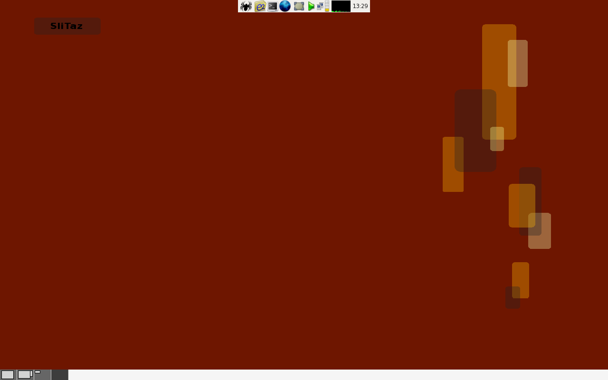

Página principal
Boot baby... boot!
Welcome - Bienvenue - Bem-vindo a SliTaz GNU/Linux web site.
 O SliTaz é uma mini-distro GNU/Linux que usa o BusyBox, o kernel Linux e softwares livres. O objetivo do SliTaz é ter um GNU/Linux que funciona na memória RAM. Pode ser instalado no HD e tem um bom suporte para a linguagem francesa na web, ele oferece confiabilidade, boa performace, estabilidade. O SliTaz dá boot com o SysLinux e oferece mais de 200 comandos do Linux, um servidor de web (LightTPD), uma base de dados (SQLite), ferramentas de recuperação, cliente IRC, servidor/cliente SSH, Serviço de janelas X, JWM (Joe's Window Manager), gFTP, Geany IDE, Firefox, AlsaPlayer, GParted, um editor de audio e muito mais. O SliTaz sempre caberá em uma imagem de menos de 30 MB, para tentar te dar uma escolha razoável de softwares.
Headlines
- Versão Cooking 20080716 - Inicialização pela Web e MPlayer
Os membros do projeto SliTaz orgulhosamente anunciam a disponibilidade de uma nova Versão Cooking (testes), que inclui muitas novas características e correções de bugs. Esta versão oferece a opção de inicializaçãowebque permite a você iniciar o SliTaz por meio da internet usando o gPXE do boot.slitaz.org. Este novo e único serviço oferece a possibilidade de usar o SliTaz em modo Live (totalmente carregado na memória RAM), usando a opção LIVE para guardar todos os seus dados permanentemente e pré-configurar o sistema. Esta nova versão possui 3 Mb a mais, então pudemos incluir o player multimídia MPlayer, um gerenciador de notas (Notecase), uma versão do gerenciador de pacotes Tazpkg que possui suporte a md5sum, suporte ao sistema de arquivos XFS diretamente no Kernel, o comando "man" e algumas atualizações. Esta versão requer ao menos 160 Mb para iniciar e rodar normalmente, e também oferecemos a variante loram para máquinas com menos recursos. Baixe a ISO do SliTaz Cooking. - 22 Mar 2008 - SliTaz GNU/Linux 1.0 release
O time de colaboradores do SliTaz orgulhosamente anunciam o lançamento do SliTaz GNU/Linux 1.0. Este é o primeiro lançamento estável após 2 anos de trabalho. O sistema é distribuido na forma de um LiveCD inicializável de 24.8 Mb de tamanho, que fornece um ambiente desktop cheio de recursos e com uma generosa seleção de aplicativos para os mais diversificados usos. O SliTaz GNU/Linux 1.0 usa o Kernel Linux 2.6.24.2, oferece o Firefox 2.0.0.12, Rsync 3.0.0, Gparted 0.3.5 e suporte a som com o Alsa 1.0.16. A distribuição permite a você ouvir música, navegar na web, editar vídeos e muito mais por meio dos 448 pacotes (programas) disponíveis que podem ser instalados com o gerenciador de pacotes tazpkg. O LiveCD permite a você criar uma distribuição personalizada ou um dispositivo LiveUSB em um simples comando. Atualizações de segurança são fornecidas pelo projeto e pacotes populares como o Firefox também pode ser atualizados para se obter mais funcionalidades. Você pode obter o SliTaz GNU/Linux 1.0 por meio da página de downloads do site. Leia as notas de lançamento para informações detalhadas sobre esta versão estável.
i18n
Website SliTaz projeto está disponível nos seguintes idiomas: English | Français | i18n
Call for help
[pt] Caso você tenha gostado desta distro e agora você quer
ajudar-nos em desenvolvimento, por favor, contate-nos. A sua ajuda é bem
vinda.
[en] If you like this distro and want to help
us at development, please, contact us. Your help is welcome.